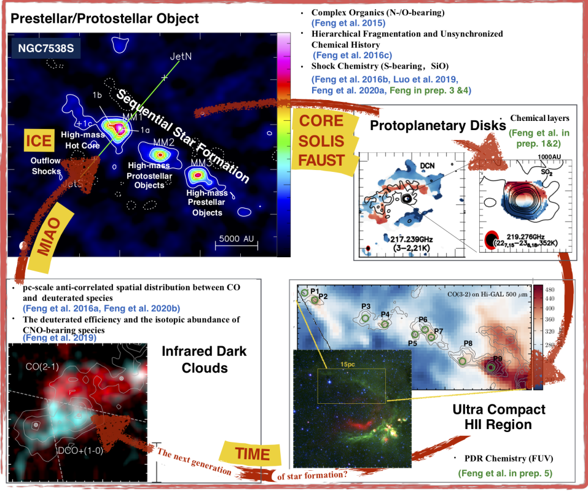

- Astrochemistry
- Molecular clouds
- Star and planetary formation
• As the 1st author:
[8] Feng, S., et al., “The Chemical Structure of Young High-mass Star-forming Clumps. II. Parsec-scale CO Depletion and Deuterium Fraction of HCO+”, 2020, ApJ, 901, 145.
doi:10.3847/1538-4357/abada3
[7] Feng, S., et al., “Chemical segregation of SO and SO2 in the bow shock region L1157-B1 and B2”, 2020, ApJ, 896, 37.
doi:10.3847/1538-4357/ab8813
[6] Feng, S., et al., “The chemical structure of young high-mass star-forming clumps: (I) Deuteration”, 2019, ApJ, 883, 202.
doi:10.3847/1538-4357/ab3a42
[5] Feng, S., et al., “Inferring the evolutionary stages of the internal structures of NGC 7538 S and IRS1 from chemistry”, 2016, A&A, 593, A46.
doi:10.1051/0004-6361/201424912
[4] Feng, S., et al., “Outflow detection in a 70 μm dark high-mass core”, 2016, ApJ, 828, 100.
doi:10.3847/0004-637X/828/2/100
[3] Feng, S., “Are infrared dark clouds really quiescent?”, 2016, A&A, 592, A21.
doi:10.1051/0004-6361/201526864
[2] Feng, S., “Resolving the chemical substructure of Orion-KL”, 2015, A&A, 581, A71.
doi:10.1051/0004-6361/201322725
[1] Feng, S.-Y., Dai, Z.-G., “Multiband fitting to three long GRBs with Fermi/LAT data: structured ejecta sweeping up a density-jump medium”, 2011, RAA, 11, 1046.
doi:10.1088/1674-4527/11/9/004
• As supervisor/co-supervisor:
[3] Luo, Gan, Feng, Siyi, +6, “Sulfur chemistry in the Orion-KL”, 2019, ApJ, 885, 82.
doi:10.3847/1538-4357/ab45ef
[2] Peng, Yaping, +8+ Feng, Siyi, +4, “ALMA Observations of Vibrationally Excited HC3N Lines Toward Orion KL”, 2017, ApJ, 837, 49.
doi:10.3847/1538-4357/aa5c81
[1] Punanova, A. Caselli, P. Feng, S., +41 “Seeds of Life in Space (SOLIS). III. Zooming Into the Methanol Peak of the Prestellar Core L1544”,2018, ApJ, 855, 112.
doi:10.3847/1538-4357/aaad09
• Travel through time and space
-Invited Public Talk for Xiamen University Malaysia Campus (Nov. 2021)
• MIAO: how to draw the profile of initial star-forming regions
-Invited Talk for NAOJ ALMA-J seminar, Mitaka, Japan (Jan. 2021)
-Talk for JingGuangXia workshop, Xiamen, China (Dec. 2020)
• ...